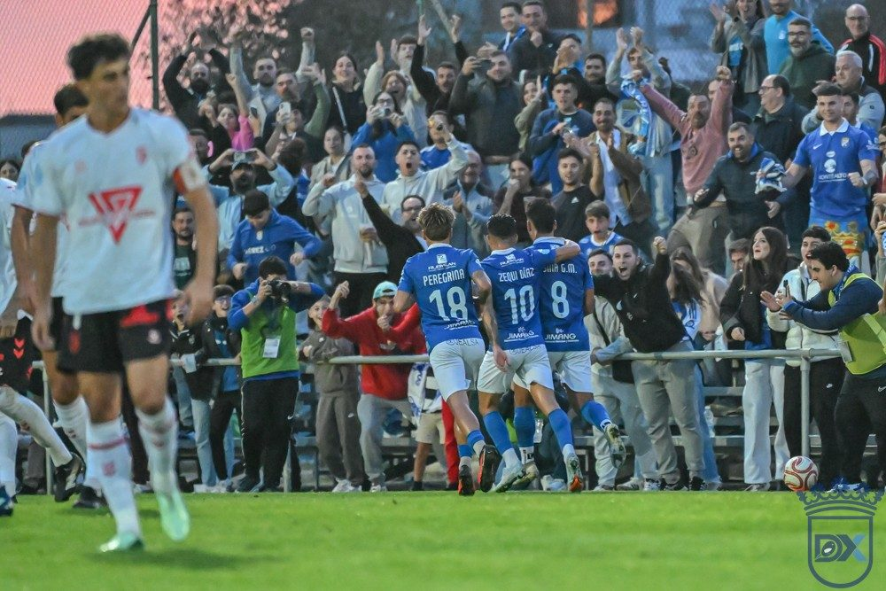
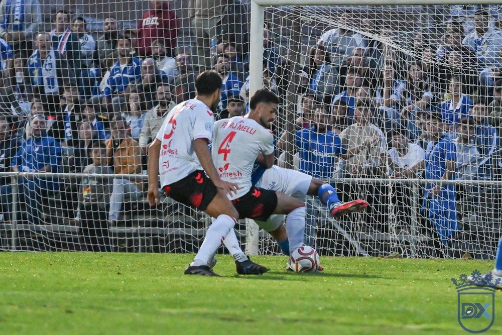
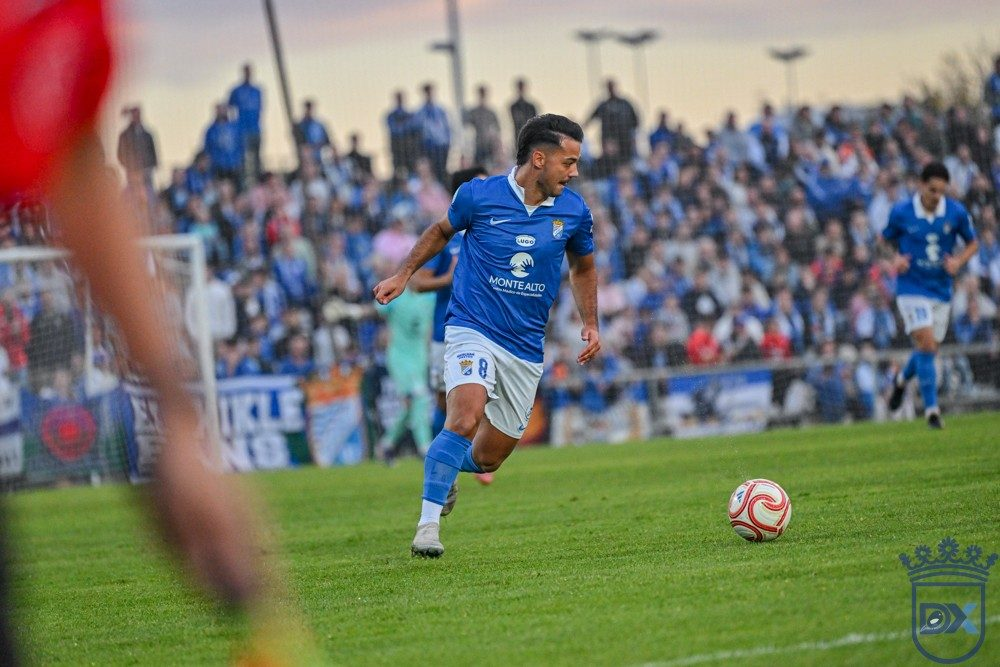

El Xerez suma cuatro victorias seguidas y se acerca a la segunda plaza (2-0)
Un penalti transformado por Isma y un gol de Mario Peregrina antes del descanso bastaron para superar al Atlético Antoniano en el Pedro Garrido. Los azulinos son quintos, a dos puntos del segundo puesto.

El Xerez CD encadenó este domingo su cuarta victoria consecutiva al derrotar por 2-0 al Atlético Antoniano en el Pedro Garrido, en la undécima jornada del Grupo IV de Segunda RFEF. El equipo de Abel Segovia resolvió el partido en la primera mitad, con un penalti de Isma en el minuto 23 y un tanto de Mario Peregrina en el 44. Hubo dos expulsiones por doble amarilla: la del visitante Pedro Melli en el 21 y la de Moi en el 50.
Con este triunfo, el Xerez es quinto. Iguala a puntos con el Betis Deportivo, pero queda por delante por la diferencia de goles general, y se sitúa a dos puntos de la segunda posición. El líder, el Recreativo de Huelva, está tres puntos por encima y tiene pendiente su partido de esta jornada ante el Sevilla Atlético, aplazado por su participación en la final de la Copa Federación.
Cambios en el once
Segovia introdujo novedades en la alineación. Guille Campos, apercibido de sanción con cuatro amarillas, empezó en el banquillo y Víctor López ocupó el lateral derecho. Fali volvió al centro de la defensa junto a Moi. En el Antoniano, que dirige Lolo Ortiz, el exjugador azulino Ricky se quedó entre los suplentes.
El Xerez salió a por el partido y encontró en la banda izquierda, con Zeki y Chacartegui, su principal vía de ataque. En el minuto 4, Isma llegó hasta la línea de fondo, pero nadie remató su pase atrás. Los locales sumaron tres saques de esquina en los primeros doce minutos. El Antoniano solo inquietó en una acción en la que Carlos Pantoja cortó un pase horizontal de Gálvez dentro del área.
El penalti que cambió el partido

La jugada clave llegó en el minuto 21. Víctor López centró desde la derecha y Pedro Melli agarró a Chuma cuando iba a rematar. El colegiado extremeño Jayro Muñoz García tardó en decidir, pero señaló penalti y mostró la segunda amarilla al defensa visitante. Isma lo transformó con un disparo centrado y a media altura, mientras el portero Matías Árbol se lanzaba a su derecha.
Con un jugador más, el Xerez tuvo el balón y llegó con facilidad, con un Mario Peregrina muy participativo, aunque le faltó acierto en los últimos metros. El Antoniano se encerró con cinco y hasta seis jugadores en la frontal de su área. En el minuto 44, Chuma robó en el centro del campo, entró en el área, se deshizo de su marcador y cedió a Peregrina, que se anticipó a su defensor para batir a Matías Árbol. Antes del descanso, Moi vio la primera amarilla en una falta que Nando lanzó por encima del larguero.
Diez contra diez tras el descanso
Lolo Ortiz dio entrada tras el descanso a Divino y Ricky en la banda derecha. La primera ocasión fue azulina: un mano a mano de Chuma que Matías Árbol desvió. En el minuto 50, Moi vio la segunda amarilla por una falta sobre Gálvez en la frontal, y Ricky Castro lanzó el libre por encima del larguero. Segovia recompuso la defensa de cuatro con la entrada de Manu Galán por Zeki en el 52. Cuatro minutos después, Matías Árbol volvió a intervenir en una falta lanzada por Chuma.

El ritmo bajó en el tramo final. En el 67, Jaime López, Zelu y Rubén Mesa sustituyeron a Isma, Julito y Chuma, y en el 81 Guille Campos relevó a Peregrina. El Antoniano no llegó a poner a prueba a Carlos Pantoja, y el Xerez cerró un triunfo que lo mantiene en puestos de play off.
Lo que dijo Segovia
"Cuando hacemos las cosas bien somos un equipo difícil, pero cuando no lo hacemos, somos un equipo vulgar como cualquiera", advirtió el entrenador, que pidió ir "paso a paso". Lea aquí todas sus declaraciones.
El Xerez sigue quinto, con 18 puntos, en puestos de play off. Iguala con el Betis Deportivo, al que supera por diferencia de goles, y está a dos puntos de la segunda plaza.Clasificación provisional de la jornada 11 (faltan el Sevilla Atlético-Recreativo de Huelva y el Betis B-Tenerife B, aplazados)